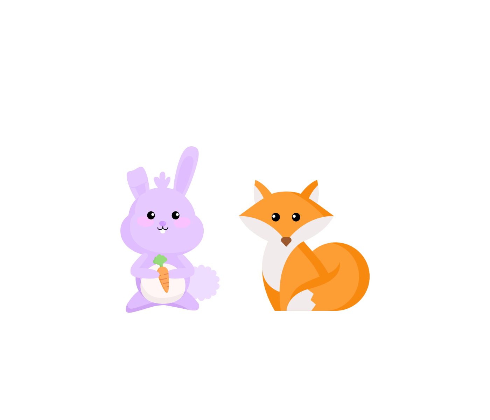
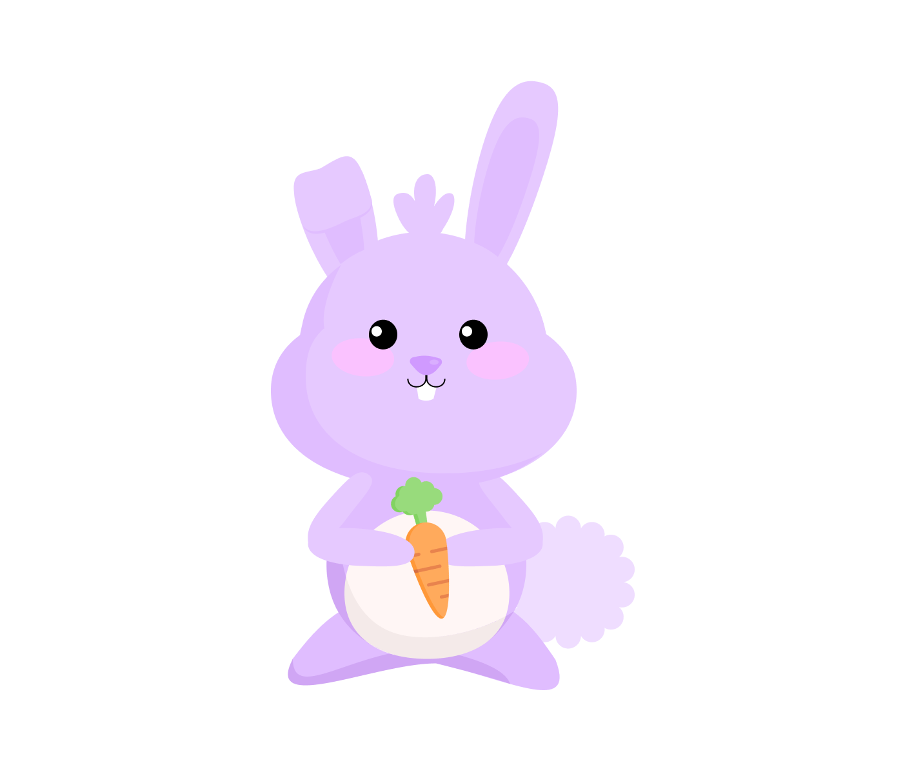
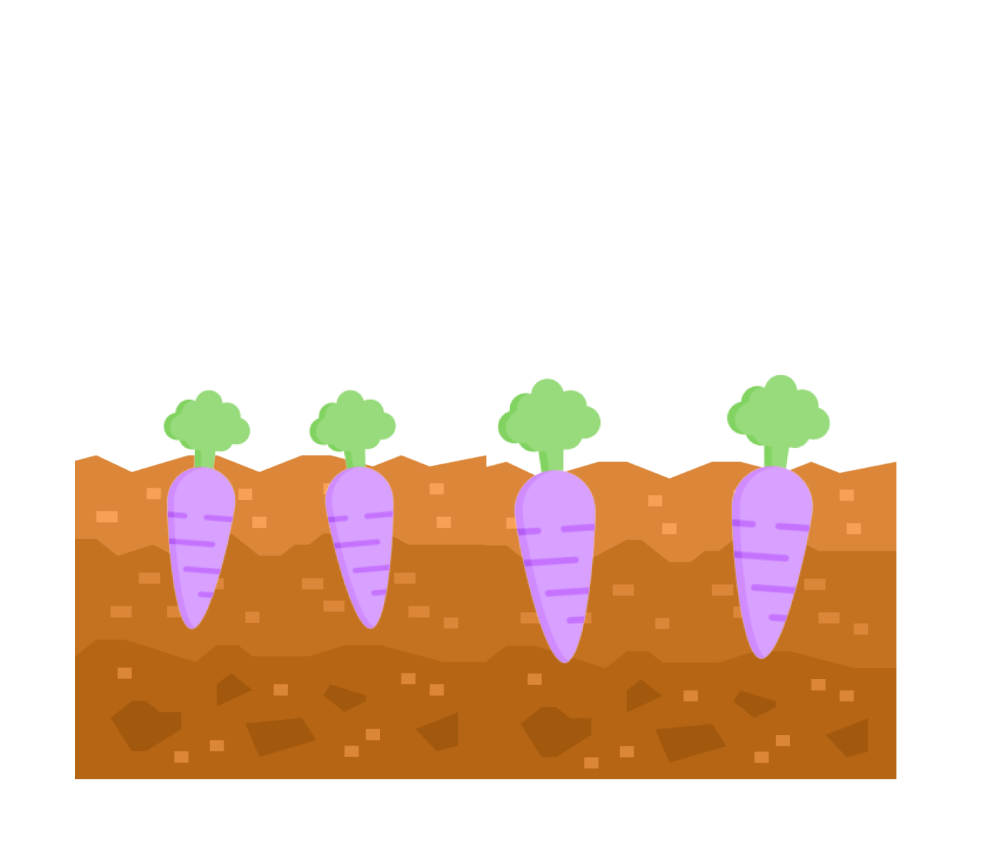
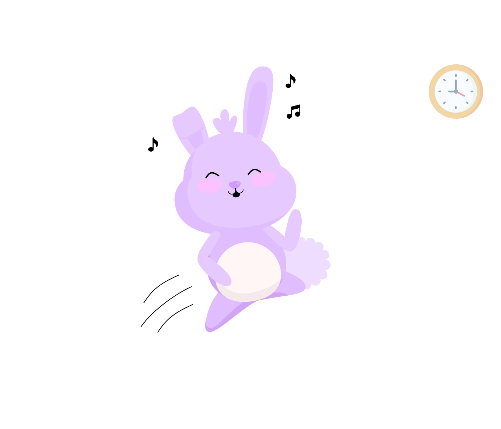
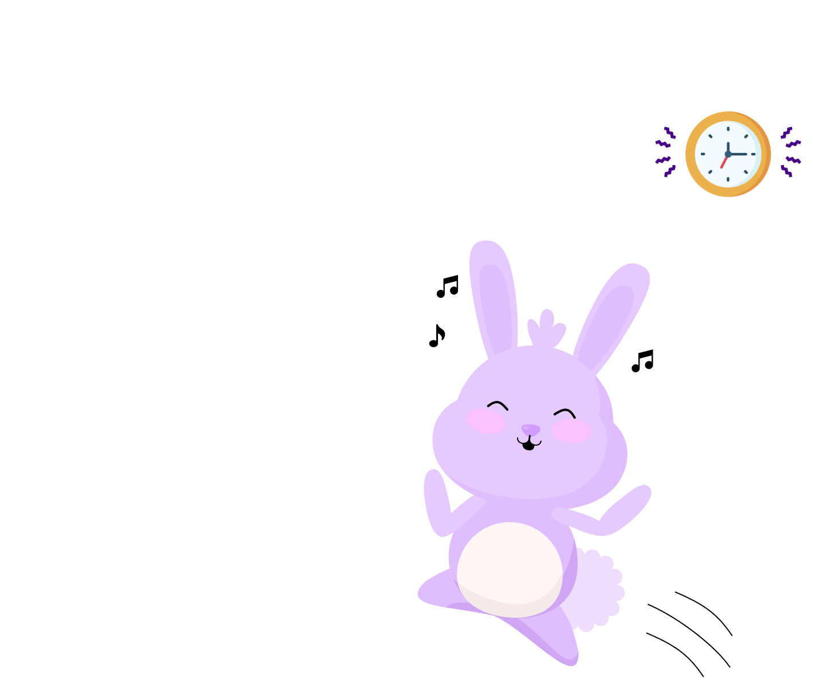
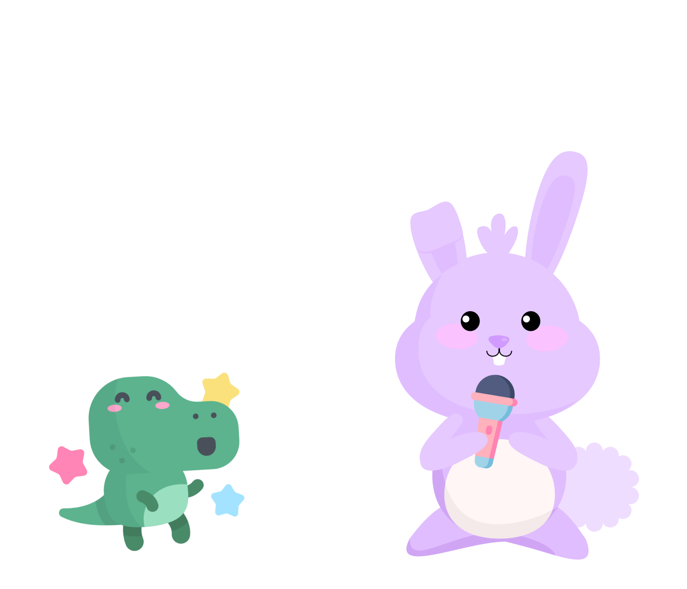
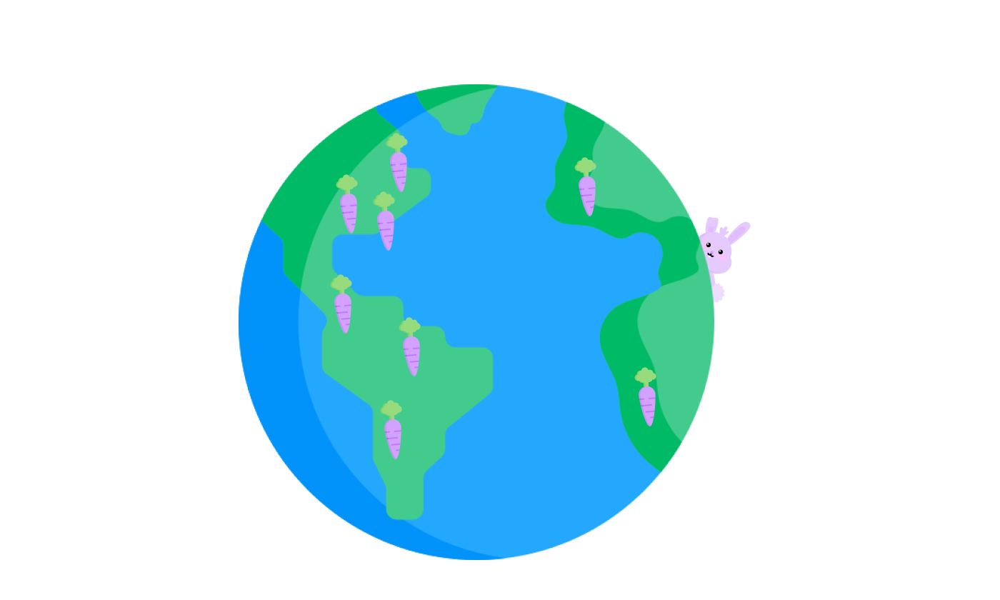
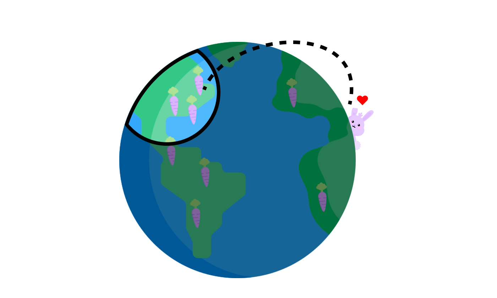
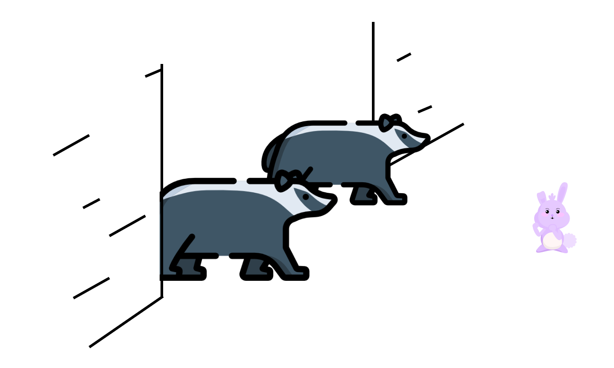

The story of La & Pho
Written by Na and Joe


There once was a beautiful purple bunny named La.
La was the cutest, fluffiest, most talented bunny in the world. Everyone admired her soft purple fur and the elegance with which she hopped around.

Among bunnies, La’s purple fur is unique. Most bunnies have white fur, but La’s parents thought that purple carrots were extra nutritious so they only ate those.
When La was born, the purple carrots gave La a beautiful purple coat and many hidden talents.

One of La’s talents is that she loves to dance. Every day, La spends hours listening to the latest bunny music and hopping to the beat.

But... sometimes La gets so enthralled with dancing that she forgets to rest! Without beauty sleep, she won’t remain beautiful, so she often needs to be reminded to go to bed on time.
When La finishes dancing, she likes to eat. Her favorite food is carrots. One day after an intense dancing session, La tried to eat a giant purple carrot burger.
The sandwich looked delicious! But La’s mouth was too small. She tried and tried to eat it, but to no avail. In the end, all she was accomplished was hurting her jaw — and from then on, she only ate baby carrots, not big ones.

Fortunately, La’s small mouth helped her become a great singer because she could better control the air flow. La would sign for hours with her friend Ra, who is a T-Rex. Whenever anyone listens to La’s happy voice, they smile.

La’s parents, Ma and Ba, were pretty open-minded. They encouraged La to sing and dance, and they always made her feel good about her unique purple fur. However, when it came to marriage they were more traditional. They wanted La to find a husband and settle down close by.
But La didn’t want that yet. She was a curious bunny, and she wanted to explore the world and find bigger, greener pastures. So, when she grew up she struck out on her own. As she wandered, she met many other animals, young and old, and made many friends.

After years of traveling across the globe, La decided that she wanted to come to Ameiguoica, known for being the most beautiful and free land in the world.
It took months of studying to prepare for the examination that would allow her entry, but she was a smart bunny and scored well. When she received the letter to come to Ameiguoica, she was happy and set out to go immediately.

But when she arrived at Ameiguoica, the gate was blocked by two mean badgers who wouldn’t let her in. The badgers were guards, and they didn’t like their jobs so they took out their frustration on immigrants like La.
While most bunnies would have been scared by the imposing badgers, La was not. She told them that she was allowed in and, eventually, they let her through.
To be continued...
La is an adventurous bunny, and there are many more stories to come. Check back later to see more!